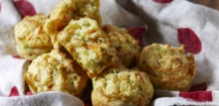

Cheesy Vegetable Muffins
You will need:
- - 2 cups of self-raising flour. These things are better than children; they make food, and they raise themselves.
- - 1/4 cup of olive oil
- - 125g can of creamed corn
- - 3/4 cup of reduced fat milk
- - 1 large egg. Maybe not an emu egg, though.
- - Canola oil spray
- - 1.5 cups of lightly-packed grated zucchini
- - 1.5 cups of lightly-packed grated carrots
- - 1.5 cups of grated reduced fat tasty cheese
- - An oven
Here's how you make 'em:
- 1. Preheat oven to 190C (170C fan-forced). Sift flour into a large bowl, stir in zucchini, carrot and cheese.
- 2. Whisk together oil, creamed corn, milk and egg. Add to flour mixture and stir until ingredients are just combined.
- 3. Lightly grease a 12 x 1/3 cup capacity non-stick muffin pan with cooking spray. Bake in oven for 25-30 minutes or until muffins are light golden and just firm to touch.
- Tip: These muffins will keep for up to 2 days in an airtight container in the refrigerator or can be frozen for up to 1 month.

Back to recipes.
Spooky.
3spooky.